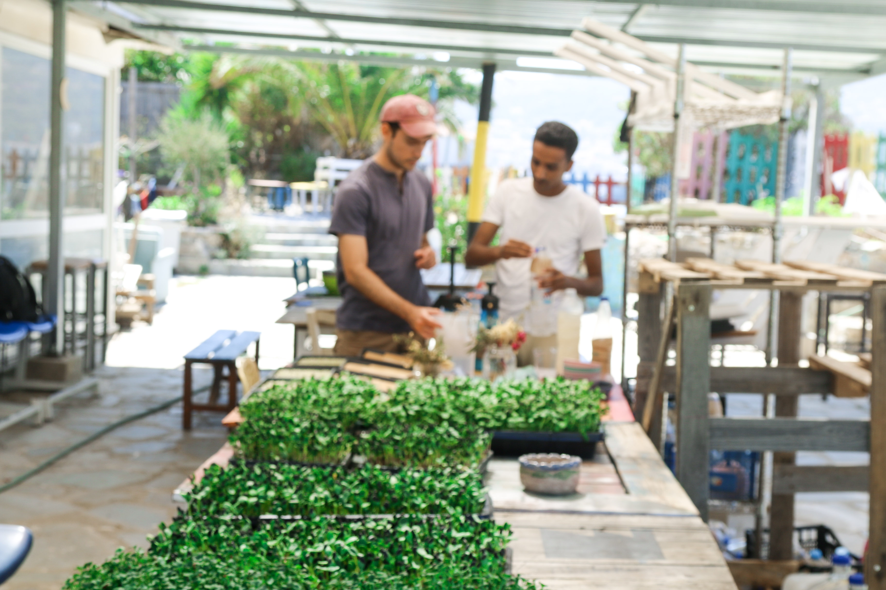
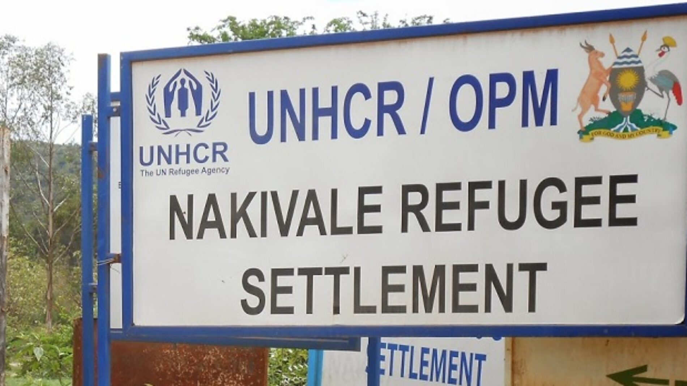

Greece · completed pilot, 2025
Microgreens at Zervou Camp, Samos
Zervou Camp holds over 3,000 asylum seekers in conditions that major NGOs have described as prison-like. Residents receive no cash assistance, and through interviews we found they received virtually no fruit or vegetables. 77.8% of camp residents we spoke to considered the food 'not healthy' or 'not fresh', and a quarter of this group reported falling ill because of the food.
In our research, microgreens farming emerged as a promising solution because of their nutrient density (averaging 5x more vitamins and carotenoids than mature vegetables, per gram) and ability to go from seed to harvest in 1–2 weeks.
Working with selfm.aid, a vocational training organisation on the island, we built and ran a low-tech microgreens farm from July to September 2025 to test four questions: could it be cost-effective, could it produce under heat and water scarcity, could community members run it, and would people actually want to eat the result.

What it produced
- 2,300 plates supplemented over 59 days, from 5.3m² of shelf space
- $0.06 per person for 2 supplemented plates per day — roughly $1.80 a month* *Our cost figures exclude one-time set-up costs of about $407, and assume water and labour are free.
- 74–94% as productive as commercial farms, at temperatures up to 43°C
- 6 community members trained; one went on to start a microgreens set-up for another organisation
- 92.6% of those interviewed wanted microgreens to stay in their diet
Limitations
The pilot's estimate of around 56 DALYs averted per $100,000 is higher than cash transfers, at around 37, and lower than staple food fortification, at around 670.
Microgreens address micronutrients, not calories. The micronutrients our crops were high in were Vitamin C, E, and K. These will not address hunger. Microgreens matter in the narrower case: where there is dearth of fresh vegetables, and camps are crowded, hot, and lack access to markets.
Germination is a fragile process, and while manageable, the farm required troubleshooting for issues including heat, rodents, and mould.
Our interviews were small: 27 people, 85% of them men. That is not a representative sample.
Where it is now
The set-up was handed over to La Maison, a grassroots organisation serving meals to the camp community. It ran successfully for several months, before they decided to close the program for manpower reasons in 2026.
We are working with other partner organisations in northern Greece to test microgreens farming on a household level, and looking to pilot this towards the end of 2026.
Uganda · in progress
The arrival gap
Uganda hosts more than two million refugees under one of the world's more progressive refugee policies, but the response behind it is under severe strain. As of March 2026, UNHCR Uganda was 14% funded. Formal plot allocations have fallen to 30×30 metres for households averaging 6.4 people.
New arrivals face the sharpest version of this. They arrive with no harvest, no savings, no livestock and no networks — and from month four their ration drops to around 840 kilocalories per person per day, before most households could have completed a single planting cycle. We call that interval the arrival gap: the period between entering a settlement and reaching any level of nutritional self-reliance.
We are most worried about the negative coping mechanisms that occur when hunger rises. Our interviews indicate that child labour, transactional sex, and suicide are all on the rise.
We are producing a funding guide that maps who is already working in Nakivale, Rwamwanja and Kyaka II, assesses what is worth backing, and sets out where philanthropic money would do the most good — with local and refugee-led organisations properly represented in it.
